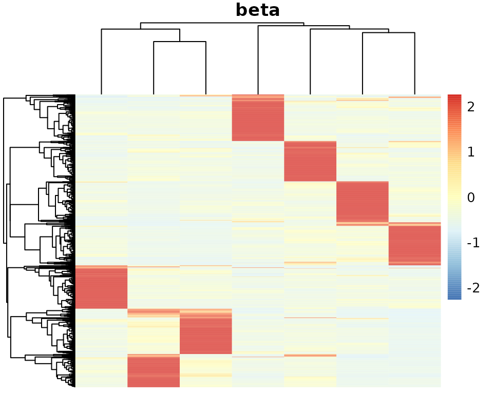
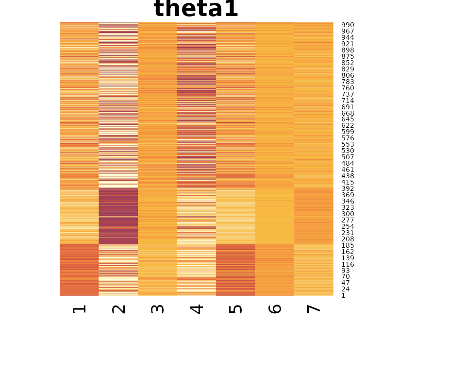
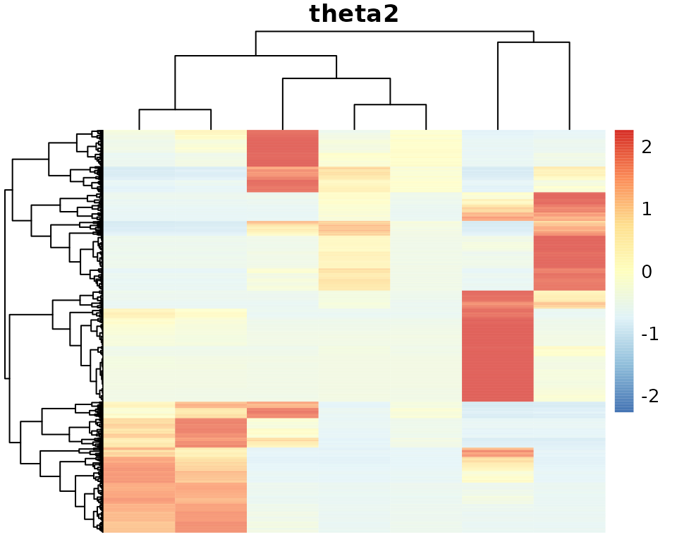
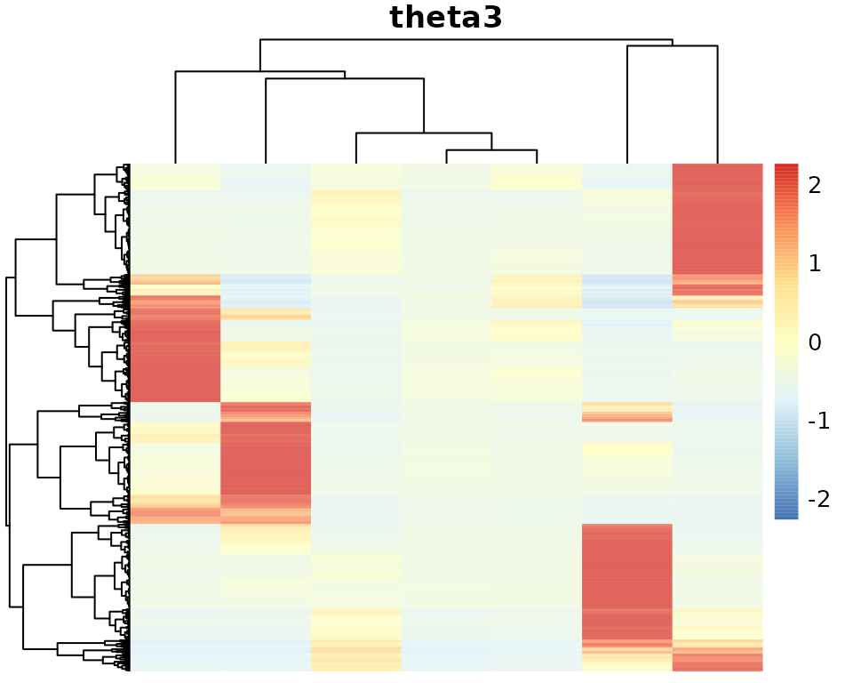
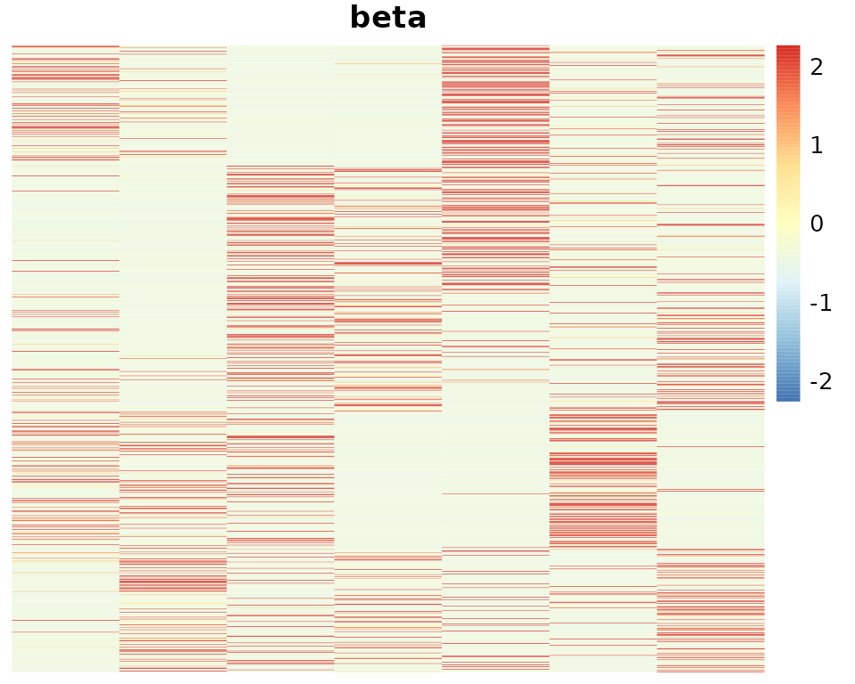
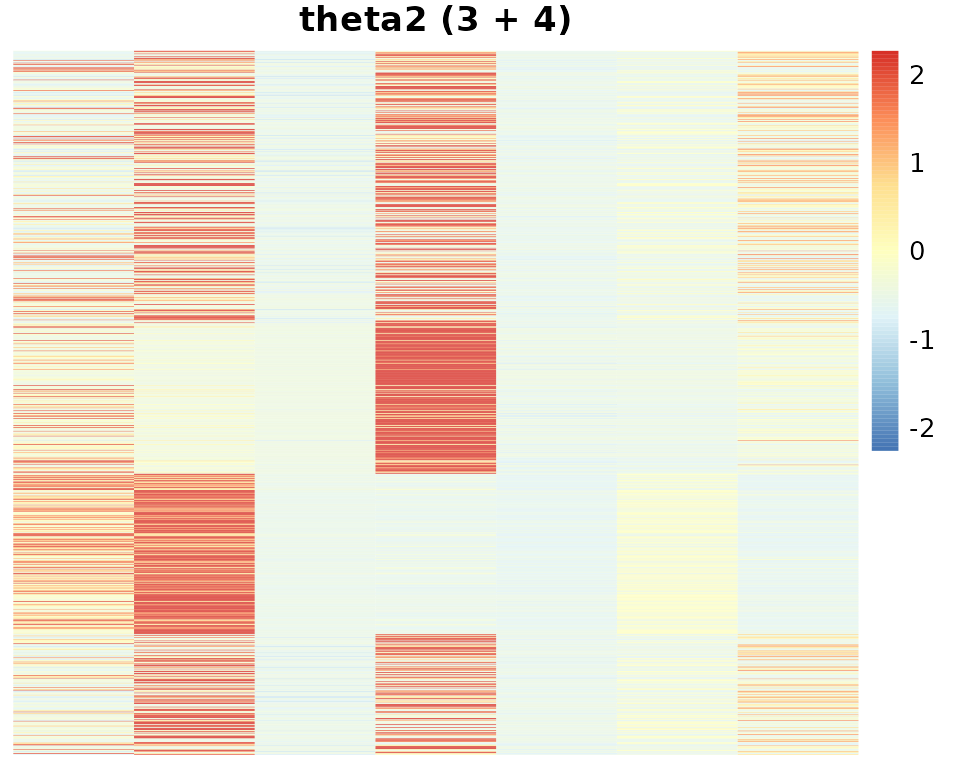
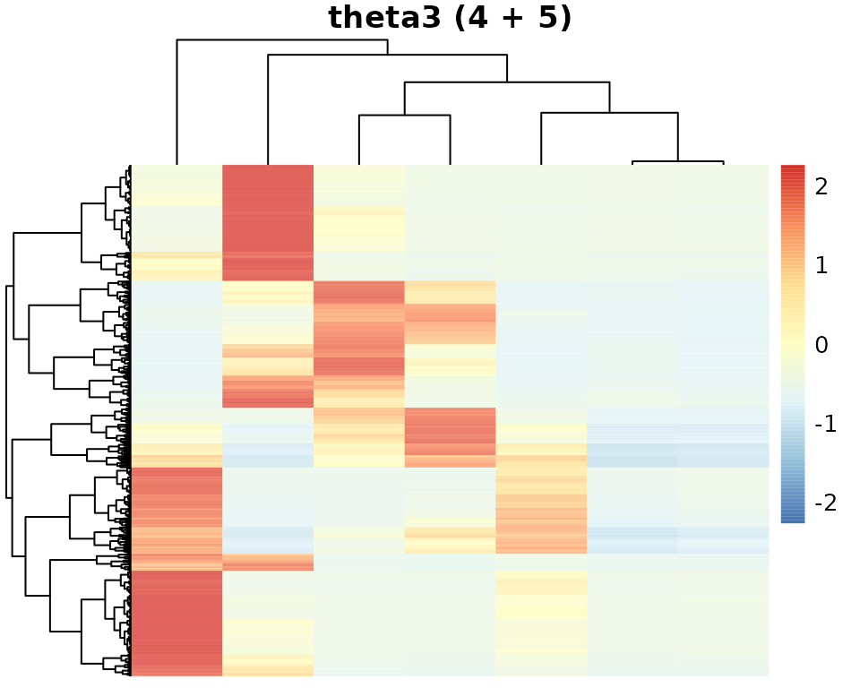

note_multi_nmf.RmdLet’s say that we have observed a data matrix multiple (\(T\)) times, perhaps, with multiple different contexts. For each \(t \in [T]\), we have \(Y^{(t)}\) generated as follows.
\[Y_{ij}^{(t)} \sim \sum_{k} \beta_{ik} \theta_{jk}^{(t)}.\]
Since the number of rows is fixed, it is very tempting to concatenate them all and perform some matrix factorization just once:
\[Y \equiv \left[Y^{(1)}, \ldots, Y^{(T)}\right] \sim \sum_{k} \beta_{k} \theta_{k}^{\top}.\] Is it that simple? Probably…
library(asapR)
set.seed(1331)
d <- 1000
n <- 1000
.rnorm <- function(d1,d2) matrix(rnorm(d1 * d2), d1, d2)
uu <- .rnorm(d, 5)
vv <- .rnorm(n, 5)
cc <- apply(t(vv), 2, which.max)
kk <- order(cc)
gg <- order(apply(t(uu), 2, which.max))
y1 <- apply(uu[,1:2, drop = F] %*% t(vv[, 1:2, drop = F]), 2, scale) + .rnorm(d, n) * .3
y2 <- apply(uu[,3:4, drop = F] %*% t(vv[, 3:4, drop = F]), 2, scale) + .rnorm(d, n) * .3
y3 <- apply(uu[,4:5, drop = F] %*% t(vv[, 4:5, drop = F]), 2, scale) + .rnorm(d, n) * .3
y1[y1 < 0] <- 0
y2[y2 < 0] <- 0
y3[y3 < 0] <- 0
u0 <- cbind(pmax(uu, 0), -pmin(uu, 0))
.out0 <- asap_fit_nmf(cbind(y1, y2, y3, u0) * 10, maxK=7)
heatmap(.out0$model$log.beta[gg, ], Rowv=NA, Colv=NA, main = "beta")
heatmap(.out0$model$log.theta[kk, ], Rowv=NA, Colv=NA, main = "theta1")
heatmap(.out0$model$log.theta[kk + n, ], Rowv=NA, Colv=NA, main = "theta2")
heatmap(.out0$model$log.theta[kk + 2*n, ], Rowv=NA, Colv=NA, main = "theta3")
u0 <- cbind(pmax(uu, 0), -pmin(uu, 0))
.out <- asap_fit_nmf_shared_dict(list(y1, y2, y3, u0), a0 = 1e-2, b0 = 1, maxK=7)
heatmap(.out$beta[gg,], Rowv=NA, Colv=NA, main = "beta")
heatmap(.out$log.theta[[1]][kk,], Rowv=NA, Colv=NA, main = "theta1 (1 + 2)")
heatmap(.out$log.theta[[2]][kk,], Rowv=NA, Colv=NA, main = "theta2 (3 + 4)")
heatmap(.out$log.theta[[3]][kk,], Rowv=NA, Colv=NA, main = "theta3 (4 + 5)")